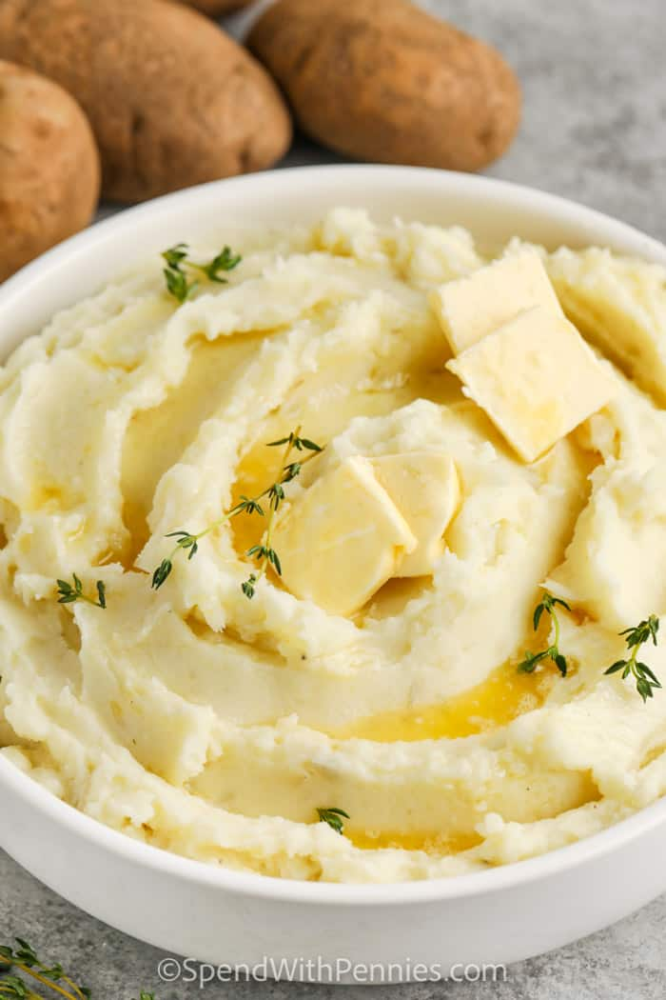

Mash

Description
This is the ultimute, smoothest mash potatoes you will ever eat.
This recipe yields roughly 5 servings, if you feel like sharing.
Ingredients
- Butter
- Cream or Milk
- Seasoning
- Of course Potatoes
Directions
- Peel the potatoes.
- Cut into quaters and place into cold salted water in a large pot.
- Boild the potatoes until tender.
- Mash the potatoes while gradually adding the other ingredients.
Home Page